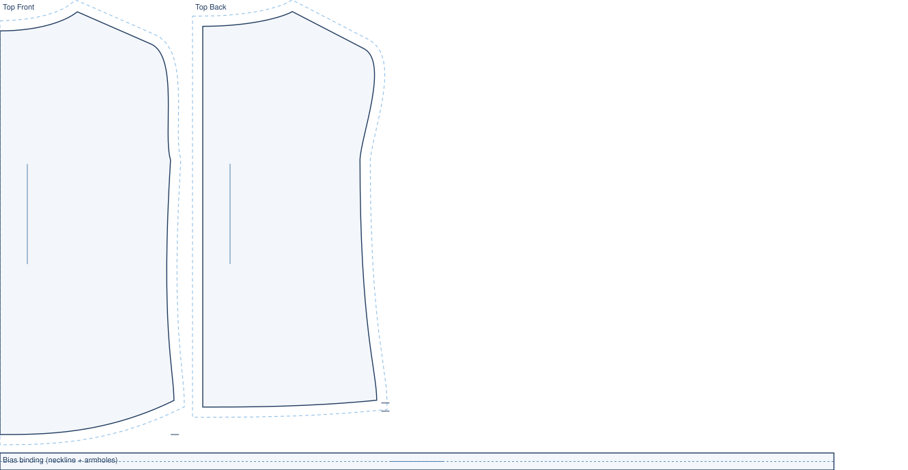
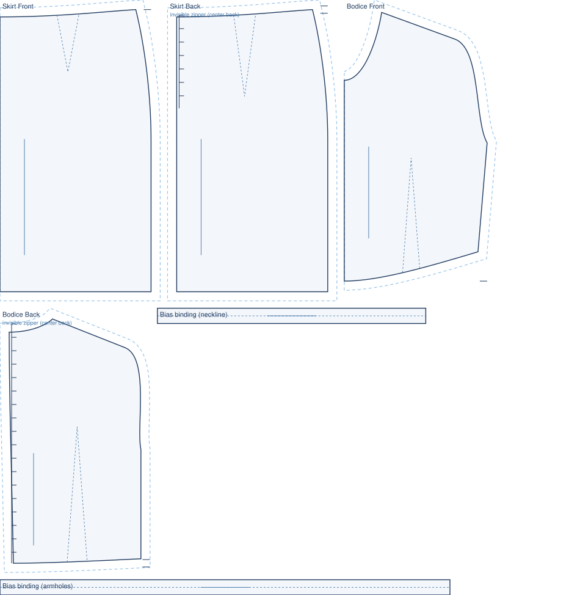
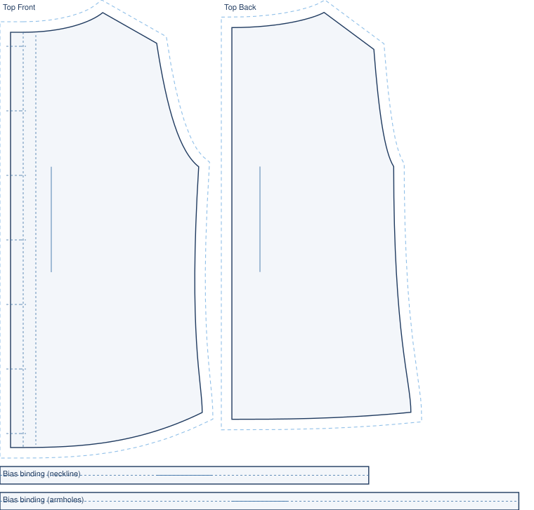
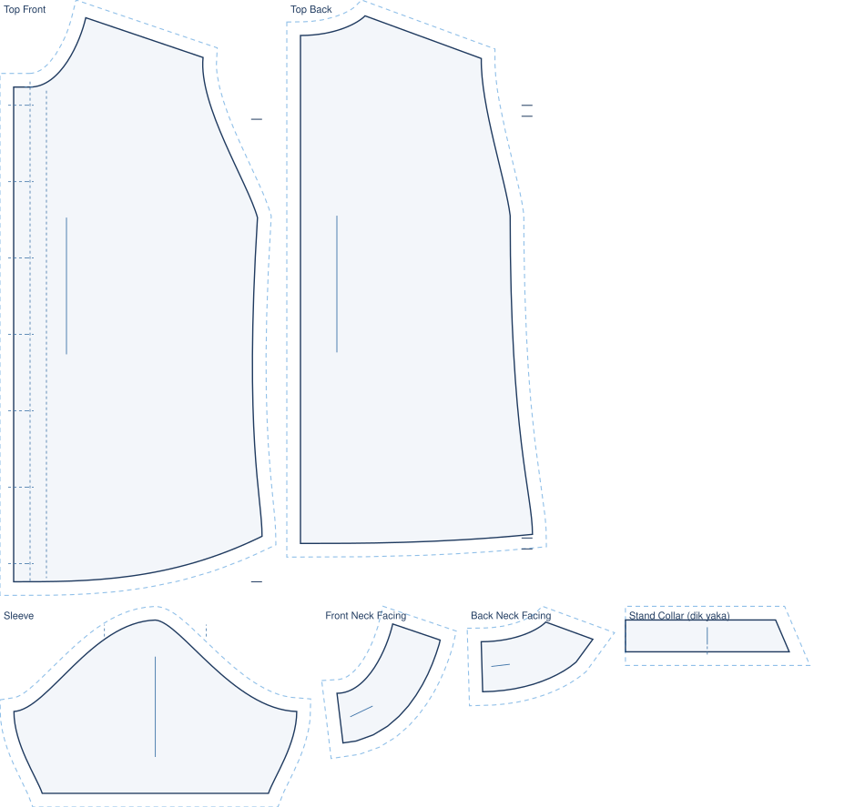
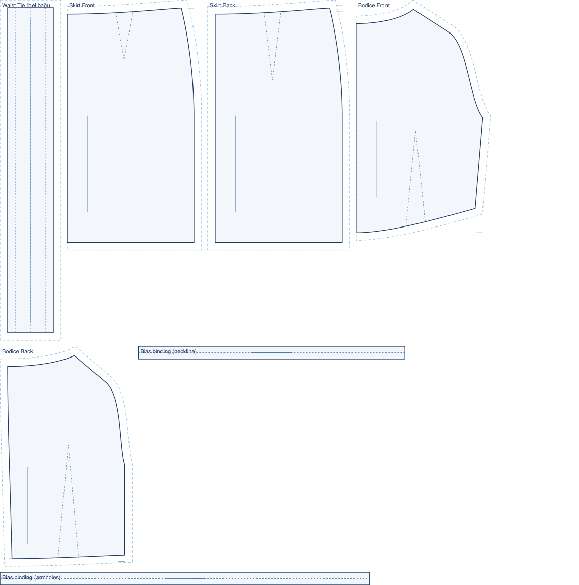
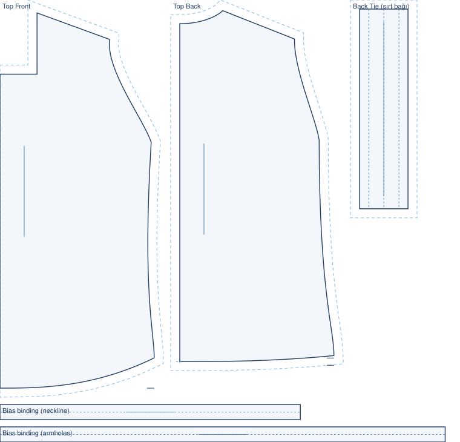
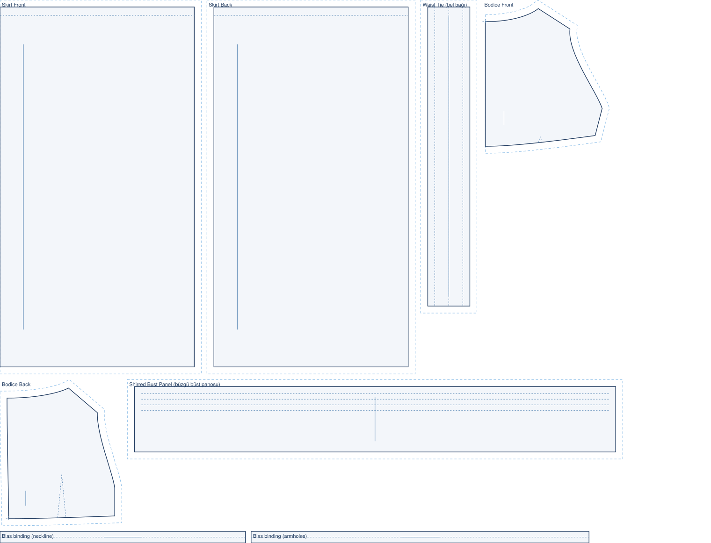
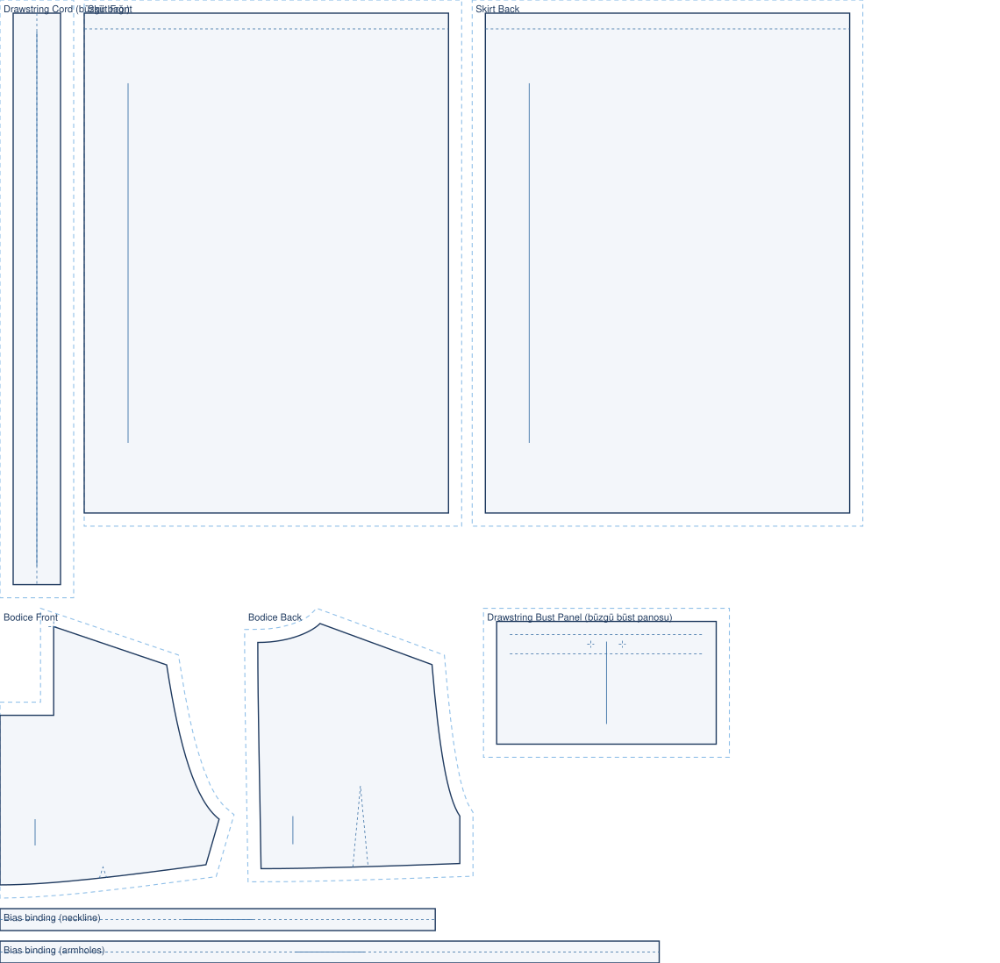

stitchu / patterns
Pattern Blog.
This is where the engine's work is collected as something you can read. Every pattern below was drafted end to end from a single photo, and every drawing is the engine's own output, nothing traced or mocked.
37 of 54 real product photos turn into a full pattern, and counting.
Follow The Number In The Patch Notes

Boat neck linen shell top
A clean sleeveless shell with a wide boat neckline that sits high on the shoulder.

Scoop neck tank mini dress
A soft scoop-neck tank dress cut in knit jersey.

Boat neck button-down top
A boat-neck top that buttons all the way down the front.

Sleeveless gingham button blouse
A sleeveless button blouse with a wide boat neckline and a full front placket.

Mandarin-collar fitted blouse
A fitted button blouse with short set-in sleeves and a low mandarin stand collar.

Back-tie shift mini dress
A sleeveless shift mini dress with a boat neckline and a fabric tie at the back waist.

Square-neck back-tie babydoll top
A square-neck babydoll top with an empire seam and a fabric tie that closes at the back.

Empire-waist tie-back dress
An empire-waist dress with a gathered bust panel and a fabric bow at the back waist.

Square-neck drawstring babydoll dress
A square-neck babydoll dress gathered at the bust by a drawstring.